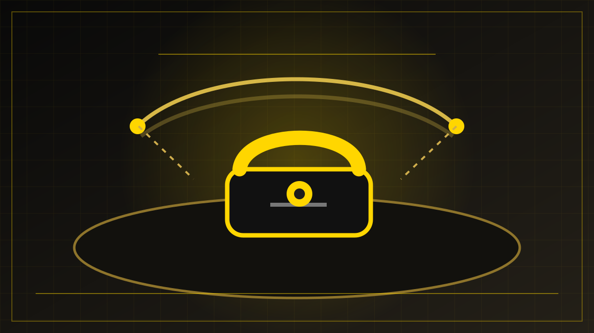

REDAKSJONELT UTKAST – IKKE PUBLISERT
Utenriks · Nyheter · 28. oktober 2026
Støre og Stubb ringte Putin om krigen i Ukraina
Jonas Gahr Støre og Alexander Stubb snakket 27. oktober med Vladimir Putin om krigen i Ukraina. Etter samtalen orienterte de Ukrainas president Volodymyr Zelenskyj. Russland fastholdt sin posisjon, og et diplomatisk gjennombrudd er ikke dokumentert.

En uvanlig direkte kontakt
Norges statsminister Jonas Gahr Støre og Finlands president Alexander Stubb ringte tirsdag 27. oktober Russlands president Vladimir Putin fra Helsinki. Ifølge Statsministerens kontor var formålet å formidle budskap om krigen i Ukraina og behovet for nye diplomatiske samtaler.
Initiativet var en oppfølging av et møte i Oslo 20. oktober. Norske og finske myndigheter opplyste at telefonsamtalen ble holdt i samråd med Ukraina. Begge land understreket at de fortsatt vil støtte Ukraina. Ifølge Reuters og den finske allmennkringkasteren Yle varte samtalen omtrent 90 minutter.
Naboland med direkte sikkerhetsinteresser
Norge og Finland deler grense med Russland. Krigen i Ukraina handler derfor ikke bare om sikkerhet lenger sør i Europa; utviklingen har også betydning for nordområdene, Østersjøregionen og forholdet mellom Russland og nabolandene.
De to lederne tok kontakt som representanter for sine egne land, ikke på vegne av Europa samlet. Ifølge den norske pressemeldingen var samtalen knyttet til planlagte møter i Abu Dhabi. Reuters har omtalt samtalen som et uvanlig direkte initiativ fra vesteuropeiske ledere.
Zelenskyj fikk orientering etter samtalen
Stubb og Støre snakket med Ukrainas president Volodymyr Zelenskyj etter telefonsamtalen med Putin. I en uttalelse fra det ukrainske presidentkontoret 27. oktober takket Zelenskyj for orienteringen og for den diplomatiske støtten. Han opplyste at Stubb og Støre hadde etterlyst konkrete russiske tiltak for å trappe ned angrep på ukrainsk energi- og annen infrastruktur.
Ukrainas utenriksminister Andrij Sybiha bekreftet samme dag, ifølge Interfax-Ukraine, at kontakten med Putin var koordinert med Ukraina. De tre lederne diskuterte også forberedelsene til planlagte samtaler mellom Ukraina, Russland og USA i Abu Dhabi i november. En planlagt samtale er ikke det samme som en inngått avtale.
Kreml fastholdt sine krav
Russlands framstilling var annerledes enn den norske og finske. Ifølge nyhetsbyrået Anadolu, som gjenga Kremls referat 27. oktober, sa den russiske siden at en varig fred krever at det Russland beskriver som landets legitime interesser blir fullt ivaretatt. Kreml kritiserte samtidig EU og NATO for en politikk Russland mener forlenger krigen. Dette er russiske myndigheters påstander, ikke nøytrale beskrivelser av årsakene til krigen.
Stubb sa senere samme dag at Putins standpunkter ikke inneholdt overraskelser, ifølge talen hans til Nordisk råds sesjon. Norske og finske myndigheter kunngjorde ingen konkret avtale etter telefonsamtalen.
Ulik vurdering i Norden
Initiativet møtte også kritikk fra enkelte nordiske ledere. Ifølge Yle sa Danmarks statsminister Mette Frederiksen at samtalen ikke var koordinert med andre europeiske land, mens Sveriges statsminister Ulf Kristersson opplyste at han ikke var informert på forhånd. Støre og Stubb har på sin side uttalt at allierte ble orientert. Kildene viser dermed ulike framstillinger av hvor bredt initiativet var samordnet.
Hva skjer videre?
Per kildekontroll 1. november 2026 er det bekreftet at samtalen fant sted, at Ukraina ble orientert, og at partene fortsatt forberedte møter i Abu Dhabi. Ukrainas presidentkontor opplyste 31. oktober at planleggingen av trepartssamtaler i første halvdel av november pågikk. Tidspunkt, deltakelse og eventuelle resultater må likevel kontrolleres på nytt før publisering.
At partene snakker sammen, innebærer ikke i seg selv at de nærmer seg en fredsavtale. De gjennomgåtte kildene dokumenterer ikke at telefonsamtalen førte til en ny avtale eller en endret russisk forhandlingsposisjon.